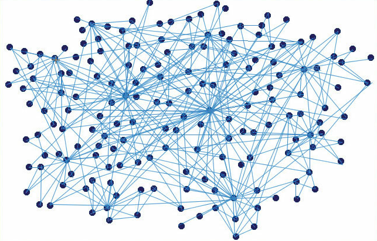
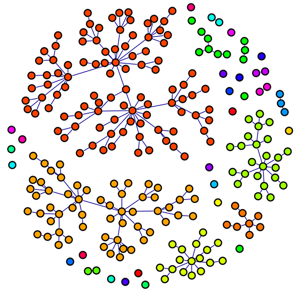
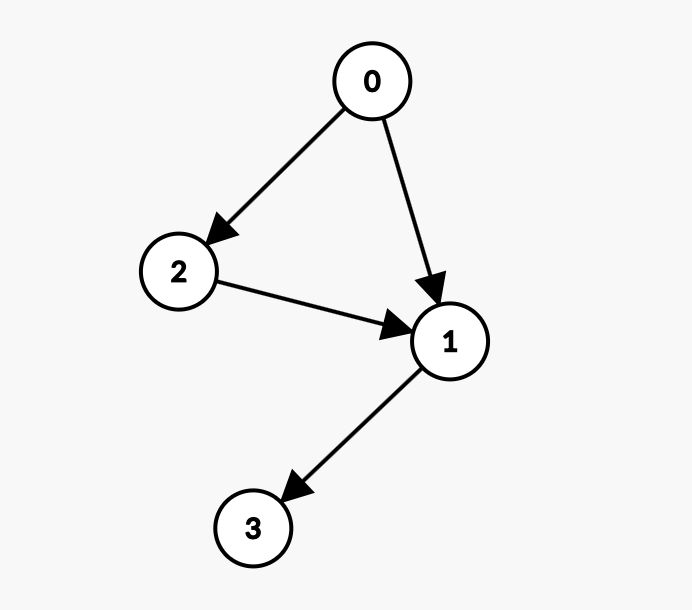
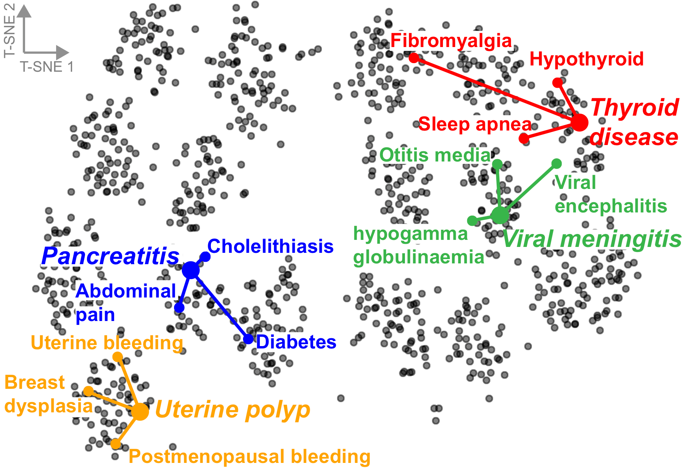
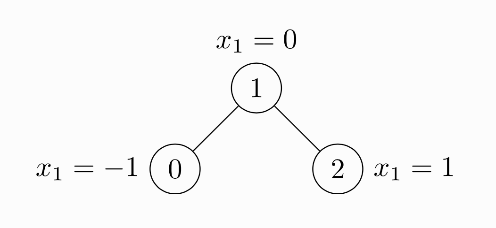
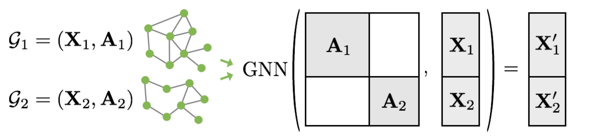

"Molecules are not sequences or grids — they are graphs. To understand chemistry, we must learn on graphs."
August 2026 · Giacomo Saccaggi
Much of healthcare data has an inherent graph structure that traditional neural networks — designed for sequences (RNNs) or grids (CNNs) — cannot naturally capture. Consider:

Healthcare data naturally forms graphs: molecules, drug interactions, protein networks, and knowledge graphs
What can we do with graph-structured data? The tasks fall into several categories:
| Task Type | Description | Healthcare Example |
|---|---|---|
| Node Classification | Assign labels to individual nodes | Is this protein a valid drug target? Is this patient high-risk? |
| Graph Classification | Assign a label to the entire graph | Is this molecule toxic? Will this drug be effective? |
| Link Prediction | Predict missing or future edges | Will these two drugs interact adversely? |
| Graph Generation | Generate new graphs with desired properties | Design novel drug molecules with specific binding affinity |
| Node Clustering | Group similar nodes together | Identify patient subgroups with similar disease profiles |
In drug discovery, the most common task is graph-level property prediction: given a molecular graph, predict whether it will be toxic, soluble, or bind to a specific target protein.
The fundamental goal of graph neural networks is to learn node embeddings — low-dimensional vector representations of nodes that capture both their features and their structural position in the graph.
Map each node v to a d-dimensional vector zv ∈ ℝd such that:
similarity(u, v) in network ≈ similarity(zu, zv) in embedding space
Nodes that are "similar" in the graph should have similar embeddings.
But what defines "similarity" in a graph? This is where the design choices come in:

Node embeddings map graph nodes to a vector space where similar nodes are close together
A naive approach would be to use the adjacency matrix row as a node's feature vector. But this has critical problems:
We need a function that generates embeddings based on local graph structure — this is exactly what GNNs provide.
Graphs are fundamentally different from the data structures deep learning was originally designed for. Here's why they're challenging:
| Challenge | Sequences/Images | Graphs |
|---|---|---|
| Size | Fixed (e.g., 224×224 image) | Arbitrary number of nodes and edges |
| Ordering | Natural order (left→right, top→bottom) | No canonical ordering of nodes |
| Locality | Local receptive fields (convolution) | No grid structure for local operations |
| Dynamics | Static once captured | Can grow/shrink over time |
| Features | Homogeneous (pixels) | Heterogeneous node and edge types |
If we relabel all nodes in a graph (swap node 1 with node 3, etc.), the graph is unchanged but the adjacency matrix looks completely different. Any valid graph neural network must be permutation invariant — produce the same output regardless of how nodes are numbered.
These challenges rule out directly applying CNNs or RNNs. We need architectures specifically designed for graph-structured data.
The breakthrough insight of GNNs is elegantly simple: a node's representation should be determined by its neighborhood. Instead of learning independent embeddings, we learn how to aggregate information from neighbors.
Every node collects ("aggregates") information from its neighbors. If I know what my friends know, I become more informed. This is the message passing paradigm.

Each node aggregates information from its neighbors to update its representation
For node v with neighbors N(v), the new representation is:
hv(new) = f(hv, AGGREGATE({hu : u ∈ N(v)}))
Where AGGREGATE is a permutation-invariant function (sum, mean, max, etc.)
The aggregation function must be permutation-invariant — the order in which we process neighbors shouldn't matter. Common choices:
A single aggregation step only captures immediate neighbors (1-hop). By stacking multiple layers, each node's representation incorporates information from progressively larger neighborhoods.

Stacking GNN layers: Layer 1 captures 1-hop neighbors, Layer 2 captures 2-hop, etc.
Layer 0: hv(0) = xv (initial node features)
Layer k: hv(k) = σ(W(k) · AGGREGATE({hu(k-1) : u ∈ N(v) ∪ {v}}))
After K layers, hv(K) captures the K-hop neighborhood of node v.
This is powerful: with just 3-4 layers, most nodes in a molecular graph "see" the entire molecule. But beware of over-smoothing — with too many layers, all node embeddings converge to the same value!
In a molecule with average degree ~3:
For drug-like molecules (20-50 atoms), 3-4 layers typically suffice.
The Graph Convolutional Network (Kipf & Welling, 2017) is the foundational GNN architecture. It uses a simple aggregation rule inspired by spectral graph theory.
For node v at layer l:
hv(l) = σ(W(l) · Σu∈N(v)∪{v} (1/√(d̃u·d̃v)) · hu(l-1))
Where:
The normalization by √(d̃u·d̃v) prevents nodes with many neighbors from having exploding activations.
The beauty of GCN is that it can be expressed as efficient matrix operations:
H(l) = σ(Â · H(l-1) · W(l))
Where:
import torch import torch.nn as nn import torch.nn.functional as F class GCNLayer(nn.Module): """Single Graph Convolutional Layer.""" def __init__(self, in_features, out_features): super().__init__() self.linear = nn.Linear(in_features, out_features, bias=False) def forward(self, x, adj_normalized): """ Args: x: Node features [N, in_features] adj_normalized: Normalized adjacency matrix  [N, N] Returns: Updated node features [N, out_features] """ # Aggregate neighbor features:  · X support = torch.mm(adj_normalized, x) # Transform: ( · X) · W output = self.linear(support) return output class GCN(nn.Module): """Two-layer GCN for node classification.""" def __init__(self, n_features, n_hidden, n_classes, dropout=0.5): super().__init__() self.gcn1 = GCNLayer(n_features, n_hidden) self.gcn2 = GCNLayer(n_hidden, n_classes) self.dropout = dropout def forward(self, x, adj_normalized): # Layer 1: features → hidden h = self.gcn1(x, adj_normalized) h = F.relu(h) h = F.dropout(h, self.dropout, training=self.training) # Layer 2: hidden → output h = self.gcn2(h, adj_normalized) return h # Logits for each node
GCN is elegant but limited:
For large graphs, full-batch GCN is infeasible. Two popular solutions:
| Method | Idea | Trade-off |
|---|---|---|
| GraphSAGE | Sample a fixed number of neighbors per node at each layer | Variance from sampling, but constant memory per batch |
| FastGCN | Sample nodes at each layer independently using importance sampling | More efficient but can miss important connections |
# GraphSAGE-style sampling: sample k neighbors per node def sample_neighbors(node_ids, adj_list, num_samples): """Sample fixed number of neighbors for each node.""" sampled = [] for node in node_ids: neighbors = adj_list[node] if len(neighbors) >= num_samples: sampled_neighbors = np.random.choice(neighbors, num_samples, replace=False) else: # Sample with replacement if not enough neighbors sampled_neighbors = np.random.choice(neighbors, num_samples, replace=True) sampled.append(sampled_neighbors) return np.array(sampled)
The Message Passing Neural Network (Gilmer et al., ICML 2017) is a general framework that unifies and extends previous GNN architectures. Crucially for drug discovery, MPNN handles both node features and edge features.

A molecule represented as a graph: atoms are nodes with features (element type, charge, hybridization), bonds are edges with features (single/double/triple, conjugated, in ring)
MPNN operates in two phases:
At each time step t:
1. Compute messages:
mvt+1 = Σw∈N(v) Mt(hvt, hwt, evw)
2. Update node states:
hvt+1 = Ut(hvt, mvt+1)
Where:
The key innovation is the message function Mt that incorporates edge features. In molecules, this lets the model learn that information flows differently across single vs. double bonds.
After T message passing steps, aggregate node embeddings into a graph embedding:
ĥG = R({hvT | v ∈ G})
The readout function R must be permutation-invariant. Options:

Readout phase: all node embeddings are aggregated into a single graph-level representation
A common choice for Mt is the edge-conditioned convolution:
Mt(hv, hw, evw) = A(evw) · hw
Where A(evw) is a neural network that outputs a d×d matrix based on edge features.
This means: the edge features determine how the neighbor's information is transformed before being sent.
For efficiency, A is typically implemented as:
class EdgeNetwork(nn.Module): """Network that produces transformation matrix from edge features.""" def __init__(self, edge_dim, hidden_dim): super().__init__() # Edge features → transformation matrix (flattened) self.net = nn.Sequential( nn.Linear(edge_dim, hidden_dim * 2), nn.ReLU(), nn.Linear(hidden_dim * 2, hidden_dim * hidden_dim) ) self.hidden_dim = hidden_dim def forward(self, edge_features): """ Args: edge_features: [num_edges, edge_dim] Returns: Transformation matrices: [num_edges, hidden_dim, hidden_dim] """ flat = self.net(edge_features) # [num_edges, hidden_dim²] return flat.view(-1, self.hidden_dim, self.hidden_dim)
The update function combines the node's current state with incoming messages. Using a GRU allows the model to selectively retain or forget information:
class MPNNUpdate(nn.Module): """GRU-based update function for MPNN.""" def __init__(self, hidden_dim): super().__init__() self.gru = nn.GRUCell(hidden_dim, hidden_dim) def forward(self, h, m): """ Args: h: Current node states [num_nodes, hidden_dim] m: Aggregated messages [num_nodes, hidden_dim] Returns: Updated node states [num_nodes, hidden_dim] """ return self.gru(m, h)
Let's build a complete MPNN for molecular property prediction in PyTorch.
First, we need to represent molecules as graphs with appropriate features:
import torch import numpy as np from rdkit import Chem def atom_features(atom): """Extract features for a single atom.""" return np.array([ # Atom type (one-hot): C, N, O, S, F, Cl, Br, I, P, other atom.GetAtomicNum() == 6, # Carbon atom.GetAtomicNum() == 7, # Nitrogen atom.GetAtomicNum() == 8, # Oxygen atom.GetAtomicNum() == 16, # Sulfur atom.GetAtomicNum() == 9, # Fluorine atom.GetAtomicNum() == 17, # Chlorine atom.GetAtomicNum() == 35, # Bromine atom.GetAtomicNum() == 53, # Iodine atom.GetAtomicNum() == 15, # Phosphorus # Degree (one-hot): 0, 1, 2, 3, 4, 5+ atom.GetDegree() == 0, atom.GetDegree() == 1, atom.GetDegree() == 2, atom.GetDegree() == 3, atom.GetDegree() == 4, atom.GetDegree() >= 5, # Formal charge atom.GetFormalCharge(), # Num hydrogens atom.GetTotalNumHs(), # Aromaticity atom.GetIsAromatic(), # In ring atom.IsInRing(), ], dtype=np.float32) def bond_features(bond): """Extract features for a single bond.""" bt = bond.GetBondType() return np.array([ # Bond type (one-hot) bt == Chem.rdchem.BondType.SINGLE, bt == Chem.rdchem.BondType.DOUBLE, bt == Chem.rdchem.BondType.TRIPLE, bt == Chem.rdchem.BondType.AROMATIC, # Conjugation bond.GetIsConjugated(), # In ring bond.IsInRing(), ], dtype=np.float32) def mol_to_graph(smiles): """Convert SMILES string to graph representation.""" mol = Chem.MolFromSmiles(smiles) if mol is None: return None # Node features atom_feats = np.array([atom_features(atom) for atom in mol.GetAtoms()]) # Edge indices and features edge_indices = [] edge_feats = [] for bond in mol.GetBonds(): i, j = bond.GetBeginAtomIdx(), bond.GetEndAtomIdx() bf = bond_features(bond) # Add both directions (undirected graph) edge_indices.append([i, j]) edge_indices.append([j, i]) edge_feats.append(bf) edge_feats.append(bf) edge_index = np.array(edge_indices).T # [2, num_edges] edge_attr = np.array(edge_feats) # [num_edges, edge_dim] return { 'node_features': atom_feats, 'edge_index': edge_index, 'edge_features': edge_attr, 'num_nodes': len(atom_feats) }
import torch import torch.nn as nn class MPNN(nn.Module): """Message Passing Neural Network for molecular property prediction.""" def __init__(self, node_dim, edge_dim, hidden_dim, output_dim, num_message_passing=3, dropout=0.1): super().__init__() self.hidden_dim = hidden_dim self.num_message_passing = num_message_passing # Initial node embedding self.node_encoder = nn.Linear(node_dim, hidden_dim) # Edge network: edge features → transformation matrix self.edge_network = nn.Sequential( nn.Linear(edge_dim, hidden_dim), nn.ReLU(), nn.Linear(hidden_dim, hidden_dim * hidden_dim) ) # GRU for node state updates self.gru = nn.GRUCell(hidden_dim, hidden_dim) # Readout network self.readout = nn.Sequential( nn.Linear(hidden_dim, hidden_dim), nn.ReLU(), nn.Dropout(dropout), nn.Linear(hidden_dim, output_dim) ) def forward(self, node_features, edge_index, edge_features, batch): """ Args: node_features: [total_nodes, node_dim] - all nodes in batch edge_index: [2, total_edges] - edge connectivity edge_features: [total_edges, edge_dim] - edge attributes batch: [total_nodes] - graph membership for each node Returns: Graph-level predictions: [batch_size, output_dim] """ # Initial node embeddings h = self.node_encoder(node_features) # [N, hidden_dim] # Compute edge transformations once edge_transform = self.edge_network(edge_features) # [E, hidden_dim²] edge_transform = edge_transform.view(-1, self.hidden_dim, self.hidden_dim) # Message passing iterations for _ in range(self.num_message_passing): h = self.message_passing_step(h, edge_index, edge_transform) # Readout: aggregate node embeddings per graph graph_embed = self.global_mean_pool(h, batch) # [batch_size, hidden_dim] # Final prediction out = self.readout(graph_embed) return out def message_passing_step(self, h, edge_index, edge_transform): """Single message passing step.""" source, target = edge_index # [E], [E] # Get source node embeddings h_source = h[source] # [E, hidden_dim] # Apply edge-conditioned transformation: A(e) @ h_source # edge_transform: [E, hidden_dim, hidden_dim] # h_source: [E, hidden_dim] → [E, hidden_dim, 1] messages = torch.bmm(edge_transform, h_source.unsqueeze(-1)).squeeze(-1) # Aggregate messages per target node num_nodes = h.size(0) aggregated = torch.zeros(num_nodes, self.hidden_dim, device=h.device) aggregated.scatter_add_(0, target.unsqueeze(-1).expand_as(messages), messages) # Update node states with GRU h_new = self.gru(aggregated, h) return h_new def global_mean_pool(self, h, batch): """Average pooling over nodes in each graph.""" batch_size = batch.max().item() + 1 # Sum node embeddings per graph graph_sum = torch.zeros(batch_size, h.size(1), device=h.device) graph_sum.scatter_add_(0, batch.unsqueeze(-1).expand_as(h), h) # Count nodes per graph ones = torch.ones(h.size(0), device=h.device) count = torch.zeros(batch_size, device=h.device) count.scatter_add_(0, batch, ones) # Mean graph_embed = graph_sum / count.unsqueeze(-1).clamp(min=1) return graph_embed
def train_mpnn(model, train_loader, val_loader, epochs=100, lr=0.001): """Train MPNN for molecular property prediction.""" device = torch.device('cuda' if torch.cuda.is_available() else 'cpu') model = model.to(device) optimizer = torch.optim.Adam(model.parameters(), lr=lr) criterion = nn.MSELoss() # For regression; use BCEWithLogitsLoss for classification best_val_loss = float('inf') for epoch in range(epochs): # Training model.train() train_loss = 0 for batch in train_loader: batch = batch.to(device) optimizer.zero_grad() pred = model(batch.x, batch.edge_index, batch.edge_attr, batch.batch) loss = criterion(pred.squeeze(), batch.y) loss.backward() optimizer.step() train_loss += loss.item() * batch.num_graphs train_loss /= len(train_loader.dataset) # Validation model.eval() val_loss = 0 with torch.no_grad(): for batch in val_loader: batch = batch.to(device) pred = model(batch.x, batch.edge_index, batch.edge_attr, batch.batch) loss = criterion(pred.squeeze(), batch.y) val_loss += loss.item() * batch.num_graphs val_loss /= len(val_loader.dataset) if val_loss < best_val_loss: best_val_loss = val_loss torch.save(model.state_dict(), 'best_mpnn.pt') if (epoch + 1) % 10 == 0: print(f'Epoch {epoch+1:3d} | Train Loss: {train_loss:.4f} | Val Loss: {val_loss:.4f}') return best_val_loss
Use GCN when:
Use MPNN when:
Standard GCN treats all neighbors equally (after degree normalization). But in many applications, some neighbors are more important than others. Graph Attention Networks (Veličković et al., ICLR 2018) learn to weight neighbors differently using attention.
For each edge (i, j), compute an attention coefficient:
Step 1: Compute raw attention scores:
eij = LeakyReLU(aT · [W·hi || W·hj])
Step 2: Normalize using softmax over neighbors:
αij = softmaxj(eij) = exp(eij) / Σk∈N(i) exp(eik)
Step 3: Weighted aggregation:
hi' = σ(Σj∈N(i) αij · W · hj)
Where:
GAT computes attention weights for each neighbor, allowing the model to focus on the most relevant connections
Like Transformers, GAT benefits from multiple attention heads that learn different aspects of neighbor importance:
class GATLayer(nn.Module): """Graph Attention Layer with multi-head attention.""" def __init__(self, in_dim, out_dim, num_heads=4, dropout=0.1, concat=True): super().__init__() self.num_heads = num_heads self.out_dim = out_dim self.concat = concat # Separate weight matrices per head self.W = nn.Linear(in_dim, out_dim * num_heads, bias=False) # Attention mechanism per head self.attention = nn.Parameter(torch.zeros(num_heads, 2 * out_dim)) nn.init.xavier_uniform_(self.attention) self.leaky_relu = nn.LeakyReLU(0.2) self.dropout = nn.Dropout(dropout) def forward(self, h, edge_index): """ Args: h: Node features [N, in_dim] edge_index: [2, E] Returns: Updated features [N, out_dim * num_heads] if concat else [N, out_dim] """ N = h.size(0) # Linear transformation: [N, out_dim * num_heads] Wh = self.W(h).view(N, self.num_heads, self.out_dim) # [N, H, D] source, target = edge_index # Get source and target node embeddings for each edge Wh_source = Wh[source] # [E, H, D] Wh_target = Wh[target] # [E, H, D] # Concatenate and compute attention scores edge_features = torch.cat([Wh_source, Wh_target], dim=-1) # [E, H, 2D] e = (edge_features * self.attention).sum(dim=-1) # [E, H] e = self.leaky_relu(e) # Softmax over incoming edges per node alpha = self.edge_softmax(e, target, N) # [E, H] alpha = self.dropout(alpha) # Weighted aggregation weighted = Wh_source * alpha.unsqueeze(-1) # [E, H, D] out = torch.zeros(N, self.num_heads, self.out_dim, device=h.device) out.scatter_add_(0, target.view(-1, 1, 1).expand_as(weighted), weighted) if self.concat: return out.view(N, -1) # [N, H*D] else: return out.mean(dim=1) # [N, D] - average over heads def edge_softmax(self, e, target, num_nodes): """Compute softmax over incoming edges for each node.""" # Subtract max for numerical stability e_max = torch.zeros(num_nodes, e.size(1), device=e.device) e_max.scatter_reduce_(0, target.unsqueeze(-1).expand_as(e), e, 'amax') e = e - e_max[target] # Exp and sum exp_e = e.exp() sum_exp = torch.zeros(num_nodes, e.size(1), device=e.device) sum_exp.scatter_add_(0, target.unsqueeze(-1).expand_as(exp_e), exp_e) return exp_e / (sum_exp[target] + 1e-10)
| Scenario | GCN | GAT |
|---|---|---|
| All neighbors equally important | ✓ | Works but overkill |
| Some neighbors more relevant | Can't learn this | ✓ Learns attention weights |
| Need interpretability | Limited | ✓ Attention weights reveal importance |
| Computational budget | Faster | More parameters, slower |
The original MPNN paper demonstrated state-of-the-art results on the QM9 dataset — predicting quantum mechanical properties of molecules.
QM9 contains ~134,000 small organic molecules with up to 9 heavy atoms (C, N, O, F). For each molecule, 13 quantum chemical properties were computed using density functional theory (DFT):
| Property | Symbol | Unit | Description |
|---|---|---|---|
| Dipole moment | μ | Debye | Measure of charge separation |
| Polarizability | α | Bohr³ | Response to electric field |
| HOMO energy | εHOMO | eV | Highest occupied molecular orbital |
| LUMO energy | εLUMO | eV | Lowest unoccupied molecular orbital |
| Gap | Δε | eV | LUMO - HOMO energy |
| Zero-point energy | ZPVE | eV | Vibrational ground state energy |
| Heat capacity | Cv | cal/mol·K | At 298K |
| Atomization energy | U0 | eV | At 0K |
MPNN achieved significant improvements over previous methods:
| Property | Previous Best | MPNN | Improvement |
|---|---|---|---|
| μ (Dipole) | 0.028 | 0.016 | 43% |
| α (Polar.) | 0.25 | 0.092 | 63% |
| εHOMO | 0.0036 | 0.0022 | 39% |
| Gap | 0.0047 | 0.0032 | 32% |
| ZPVE | 0.0006 | 0.00017 | 72% |
| U0 | 0.45 | 0.19 | 58% |
The HOMO-LUMO gap is particularly important in drug discovery — it correlates with molecular stability and reactivity.
Unlike images where batching is straightforward (stack along a new dimension), graphs have variable sizes. The solution: create one large disconnected graph containing all molecules in the batch.
def collate_graphs(graphs): """Combine multiple graphs into a batch.""" batch_node_features = [] batch_edge_index = [] batch_edge_features = [] batch_labels = [] batch_membership = [] # Which graph each node belongs to node_offset = 0 for i, g in enumerate(graphs): num_nodes = g['node_features'].shape[0] batch_node_features.append(g['node_features']) batch_edge_features.append(g['edge_features']) # Offset edge indices edge_index = g['edge_index'] + node_offset batch_edge_index.append(edge_index) # Track which graph each node belongs to batch_membership.extend([i] * num_nodes) batch_labels.append(g['label']) node_offset += num_nodes return { 'node_features': torch.cat([torch.tensor(x) for x in batch_node_features]), 'edge_index': torch.cat([torch.tensor(x) for x in batch_edge_index], dim=1), 'edge_features': torch.cat([torch.tensor(x) for x in batch_edge_features]), 'batch': torch.tensor(batch_membership), 'labels': torch.tensor(batch_labels) }
In practice, use PyTorch Geometric (PyG), which provides optimized implementations of common GNN operations:
from torch_geometric.nn import GCNConv, GATConv, NNConv, Set2Set from torch_geometric.data import Data, DataLoader class MPNN_PyG(nn.Module): """MPNN using PyTorch Geometric's NNConv (edge network convolution).""" def __init__(self, node_dim, edge_dim, hidden_dim, output_dim, num_layers=3): super().__init__() self.node_encoder = nn.Linear(node_dim, hidden_dim) # Edge network for NNConv edge_nn = nn.Sequential( nn.Linear(edge_dim, hidden_dim), nn.ReLU(), nn.Linear(hidden_dim, hidden_dim * hidden_dim) ) # Message passing layers self.convs = nn.ModuleList() self.grus = nn.ModuleList() for _ in range(num_layers): self.convs.append(NNConv(hidden_dim, hidden_dim, edge_nn, aggr='add')) self.grus.append(nn.GRUCell(hidden_dim, hidden_dim)) # Set2Set readout for better aggregation self.readout = Set2Set(hidden_dim, processing_steps=3) # Final MLP self.mlp = nn.Sequential( nn.Linear(2 * hidden_dim, hidden_dim), nn.ReLU(), nn.Linear(hidden_dim, output_dim) ) def forward(self, data): x = self.node_encoder(data.x) for conv, gru in zip(self.convs, self.grus): m = conv(x, data.edge_index, data.edge_attr) x = gru(m, x) # Graph-level readout graph_embed = self.readout(x, data.batch) return self.mlp(graph_embed)
For large-scale graphs (social networks, citation graphs), use GCN with sampling or more efficient architectures like GraphSAINT or ClusterGCN.
We've covered the theory and implementation of Graph Neural Networks for drug discovery:
| Architecture | Key Feature | Best For |
|---|---|---|
| GCN | Simple neighborhood aggregation | Large graphs, node classification |
| GraphSAGE | Sampling for scalability | Very large graphs, inductive learning |
| MPNN | Edge features via message functions | Molecules, small graphs with rich edge info |
| GAT | Learned attention weights | When neighbor importance varies |